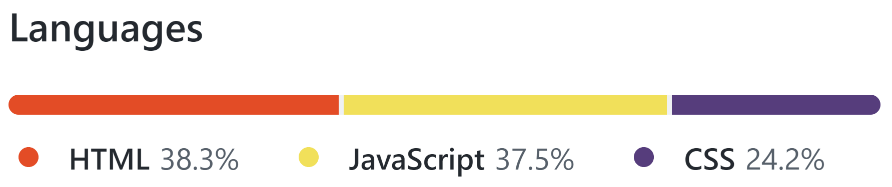

PAC MELHOR GRUPO
MARUAN BIASI EL ACHKAR - JOSE VICTOR GONTIJO DA CRUZ - RICARDO FALCAO SCHLIEPER
Neste site, criado para a N2 do PAC, apresentaremos nosso video "Por que robótica na TI?" e os quatro projetos desenvolvidos no Tinkercad, utilizando a biblioteca "Three.js" em JavaScript, HTML e CSS. (FAVOR VER README NO GITHUB)
ESTATISTICAS DO SITE
CRIADO USANDO
  

POR QUE ROBOTICA NA TI
No video "Por que robotica na TI", feito para a N1 do PAC, falamos sobre as aplicacoes da robotica no cotidiano, com foco em Chatbots, programas que podem ou nao usar inteligencia artificial para se comunicar com seres humanos de forma natural, eles sao muito uteis em e-commerce para atender clientes sem a necessidade de um funcionario presente. O video foi feito errado, pois devia ter abordado alguns topicos estipulados pelo professor, porem nao sabiamos disso quando gravamos.
AULA 06 - SEMAFORO
No projeto da AULA 06 do PAC, utilizamos o Tinkercad para criar um Semaforo. Com um Arduino programado corretamente, protobard, 3 LEDS das cores vermelho, amarelo e verde e alguns resistores, criamos um sistema que simula um semaforo real, ele liga o verde por um tempo, depois passa rapidamente pelo amarelo para chegar no vermelho, esse loop e repetido ate a energia ser desligada.
LINK DO PROJETO NO TINKERCAD
AULA 07 - SENSOR DE LUZ
No projeto da AULA 07 do PAC, utilizamos o Tinkercad para criar uma luz que liga no escuro, usando um Arduino, sensor de luminosidade, resistores e uma LED, programamos um algoritimo que liga a LED quando o sensor de luminosidade detecta escuro. O projeto pode ser chamado de luz de emergencia, porem geralmente, luzes de emergencia ligam quando falta energia eletrica e nao quando falta luminosidade. Um sistema desses poderia ser feito usando capacitores em vez de um Arduino, sem a necessidade da programacao.
LINK DO PROJETO NO TINKERCAD
AULA 08 - MOTOR DC
No projeto da AULA 08 do PAC, utilizamos o Tinkercad para criar um sistema bem mais complexo que os outros, dessa vez fizemos um controlado de motor DC, utilizando um potenciometro e algumas linhas de codigo no Arduino, podemos controlar a velocidade e direcao do giro de um motor DC com o potenciometro, um driver de motor tipo ponte-H e uma bateria 9V tambem foram usados.
LINK DO PROJETO NO TINKERCAD
AULA 09 - BOTAO E LED
No projeto da AULA 09 do PAC, utilizamos o Tinkercad para ligar e desligar uma LED com apenas um botao. Criar uma LED que liga e desliga usando dois botoes e facil, porem quando precisamos criar uma boolean, que alterna entre ligado e desligado sempre que o botao e pressionado, fica mais dificil. Com um pouco de programacao no Arduino e um resistor, o sistema foi feito de uma forma bem simples e funcional.
LINK DO PROJETO NO TINKERCAD